GLICD
Connecter le PC à un réseau wi-fi :
Debian,
NetworkManager et
Xfce.
Avant de commencer, se reporter au chapitre :
Réseaux wi-fi avec une carte wi-fi intégrée au PC
- Se reporter dans un premier temps au chapitre :
Les périphériques réseaux (Internet)
ATTENTION : Avant de commencer le réseau doit être activé.
- Positionner le pointeur de la souris sur l'icône comme sur l'image ci-dessous

- Clic droit sur l'icône, une liste déroulante apparaît.
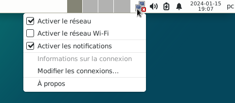
- Le réseau wi-fi n'est pas activé.
Activer le réseau wi-fi :
Simple clic sur la case : Activer le réseau wi-fi

- Une notification apparaît : « Réseaux wi-fi disponibles »
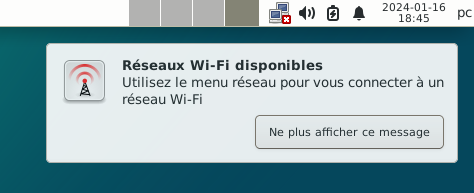
- Nota : Il se peut qu'une fenêtre se soit ouverte demandant une authentification du réseau wi-fi.
Si c'est le cas, fermer cette fenêtre avec la petite croix.
- Vérifier :
si le « réseau » est activé.
et si le « réseau wi-fi » est activé.
Positionner le pointeur de la souris sur l'icône comme sur l'image ci-dessous
- Clic droit sur l'icône, une liste déroulante apparaît.

- Le « réseau » est activé puisque le carré est coché.
Le « réseau wi-fi » est activé puisque le carré est coché.
- Nota : Pour que le réseau wi-fi apparaisse, il faut que le réseau soit activé,
comme sur l'image ci-dessus
- Positionner le pointeur de la souris sur l'icône comme sur l'image ci-dessous
- Simple clic sur l'icône, le menu réseau apparaît.
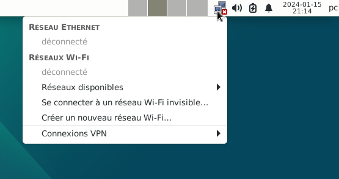
- Positionner le pointeur de la souris sous : Réseaux wi-fi > Réseaux disponibles
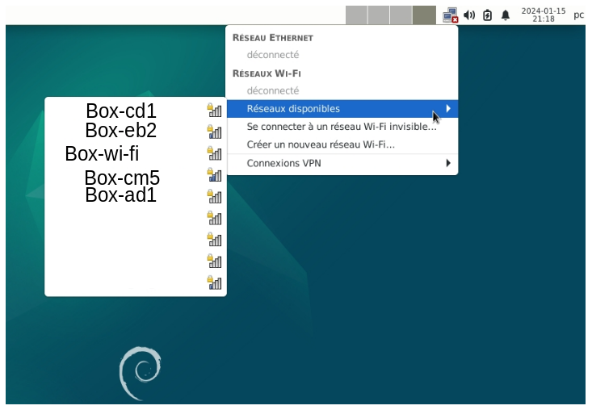
- Une liste de réseau wi-fi apparaît
- Dans cet exemple le réseau wi-fi est celui de la box. (le wi-fi de la box doit être activé)
Le nom de ce réseau wi-fi est : « Box-wi-fi »
Simple clic > Box-wi-fi
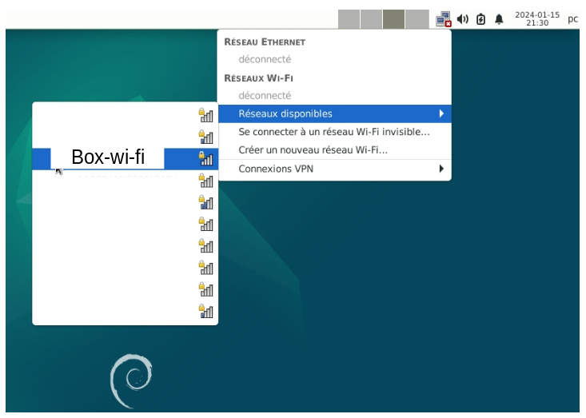
- Nota : En haut à droite du bureau l'icône « Périphériques réseaux (Internet) » a changé.
Cela veut dire que le PC cherche à se connecter au réseau wi-fi de la box.
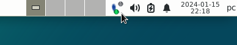
- Une fenêtre s'est ouverte demandant : « Authentification nécessaire pour le réseau wi-fi »
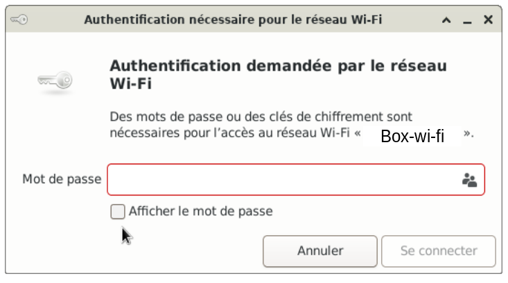
- En général un réseau est protégé par un mot de passe
Simple clic dans le rectangle devant lequel il est indiqué mot de passe
Puis, à l'aide du clavier, indiquer le mot de passe du réseau wi-fi
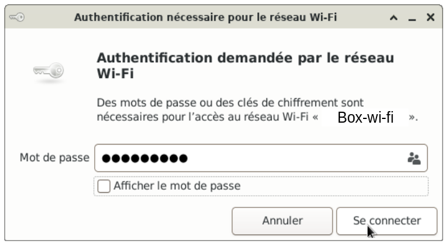
- Simple clic dans le petit carré « Afficher le mot de passe »
Permet de voir si le mot de passe est correct
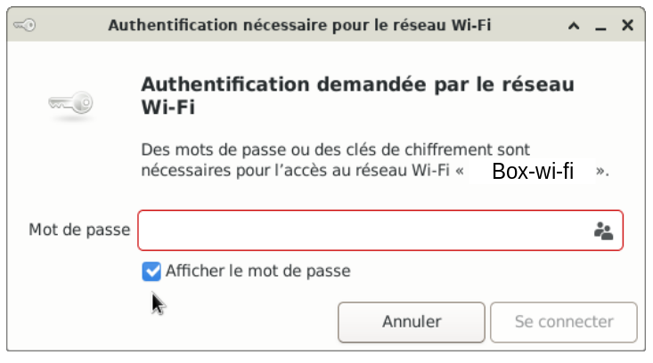
- Nota : Si la notification « Déconnecté » apparaît, cela veut dire que le temps de connexion s'est écoulé.
Il faut recommencer.
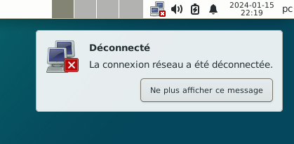
- Après avoir saisi le mot de passe
Simple clic > Se connecter
- Nota : Pour la prochaine connexion, la saisie du mot de passe ne sera plus nécessaire
puisque celui-ci sera enregistré.
- Si la connexion s'est établie, l'icône « Périphériques réseaux (Internet) » a changé.
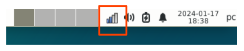
- Positionner le pointeur de la souris sur l'icône

- Une notification apparaît: « Connexion au réseau WI-FI « Box-wi-fi » active : Box-wi-fi (34%) »
Le nom du réseau wi-fi dans cet exemple est : Box-wi-fi
Le réseau a une qualité de réception de 34% > 2 barres de l'icône sont en bleu.
- Simple clic sur l'icône, le menu réseau apparaît, avec le réseau wi-fi « Box-wi-fi »
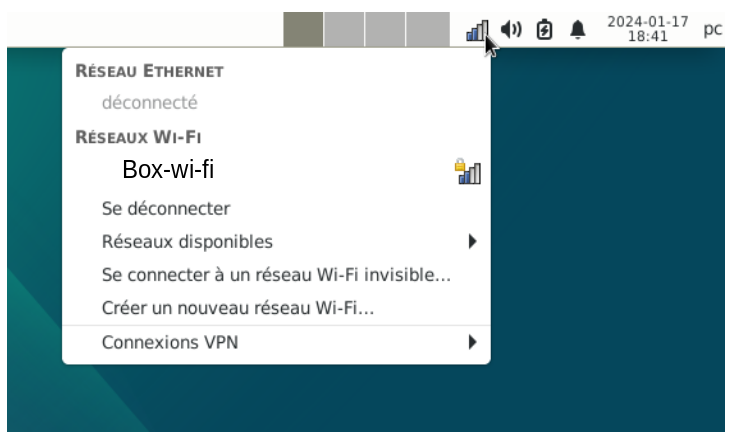
- Vérifier la connexion, ouvrir le naviguateur internet Firefox
Simple clic > Applications > Internet > Firefox ESR

- L'application Firefox s'ouvre et il est maintenant possible de naviguer sur internet.
Si besoin, se rendre au chapitre :
Déconnecter le PC du réseau wi-fi.

Retour
Informations sur le logiciel libre et
Merci.
Marques déposées :
Ce site ne fait pas partie de Debian, n'est pas produit par le projet
Debian, ni approuvé par le projet Debian.
Ce site n'est pas affilié à Debian. Debian est une marque déposée appartenant
à Software in the Public Interest, Inc.
Contribuer :
Ce site ne fait pas partie de XFCE, n'est pas produit par le projet
XFCE, ni approuvé par le projet XFCE.
Ce site n'est pas affilié à XFCE.
Ce site est juste réalisé par un passionné.